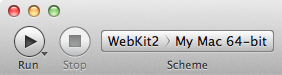
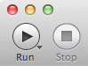

Set the project's build products location
To find the WebKit you built, Xcode needs to know the build products location that build-webkit used. You can set the build products location in the project's build settings editor.
Set the project's active scheme
Xcode also needs to know the build configuration you used. You can set the active scheme from the workspace window.
Add Safari to the project's active scheme
Choose Edit Scheme from scheme pop-up menu. In the leftmost pane of the window, choose Run. In the Info pane, choose Other from the Executable pop-up menu. Then select /Applications/Safari.app.

Launch the debugger
In the workspace window, click the Run button.
See the Xcode Debugging Guide for more information on using Xcode to debug software on Mac OS X.